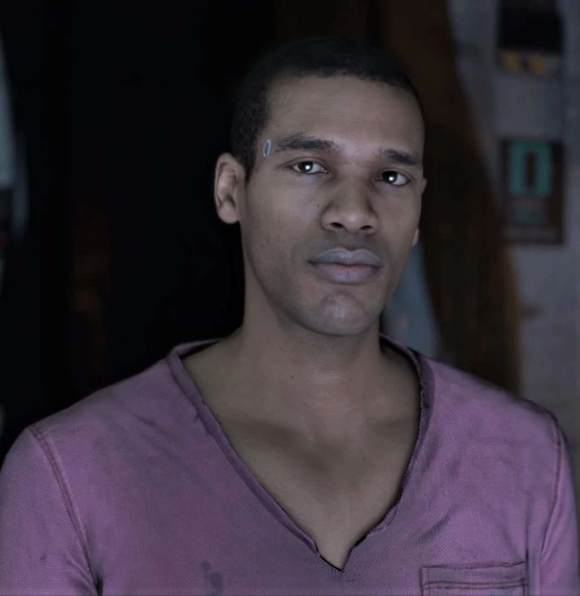
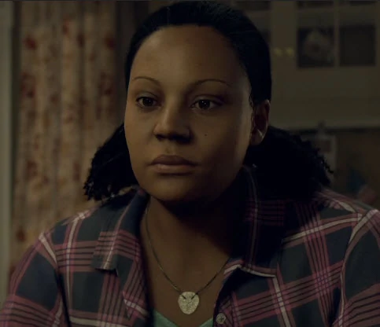

Detroit: Become Human is a 2018 adventure video game developed by Quantic Dream and published by Sony Interactive Entertainment.
Detroit: Become Human is about a story that follows 3 charcters, Kara, Connor, Markus, all of which are andriods. They are in a society that relies and uses andriods for assistance to humans.
| Name | Picture of In-Game Character | Description | Actor | Picture of Actor |
|---|---|---|---|---|
| Connor | Connor is an RK800 and the first android to help the Detroit Police Force, working for Lieutenant Hank Anderson. | Bryan Dechart |  |
|
| Markus | Markus is an RK200 domestic android. He stays with and takes care of Carl Manfred, a famous Detroit painter. | Jesse Williams | ||
| Kara | Kara is an AX400 android who is used as a housemaid for the Williams family. | Valorie Curry |  |
| Name | Picture | Description | Actor | Picture of Actor |
|---|---|---|---|---|
| Lieutenant Hank Anderson | An alcoholic Lieutenant that works at Detroit Police Station. | Clancy Brown | ||
| Painter Carl Manfred | Famous Painter in Detroit who relies on Markus for care due to his old age. | Lance Henriksen | ||
| Alice Williams | The daughter of Todd Williams and is taken care of by Kara. | Audrey Boustani |
| Name | Picture | Actor | Picture of Actor |
|---|---|---|---|
| Daniel | Ben Lambert | ||
| Gavin Reed | Neil Newbon | ||
| Elijah Kamski | Neil Newbon | ||
| Amanda | Simbi Khali | ||
| Leo Manfred | Paul Spera | ||
| North | Minka Kelly & Kaycie Chase | ||
| Josh |  | Parker Sawyers | |
| Simon | Ben Lambert | ||
| Lucy | Yvonne Wandera | ||
| Todd Williams | Dominic Gould | ||
| Zlatko Andronkov | Saul Jephcott | ||
| Luther | Evan Parke & Jua Amir |  |
|
| Rose and Adam Chapman |  | ||
| Carlos Ortiz and Carlos' Android | N/A |